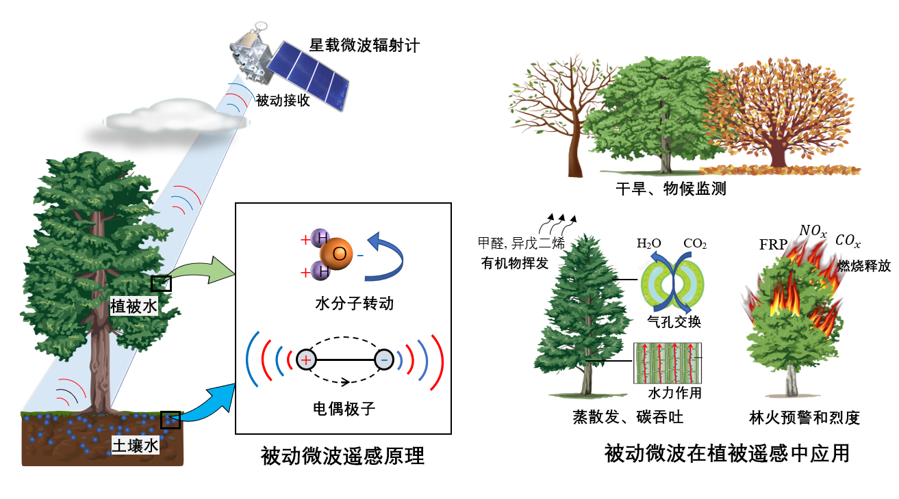
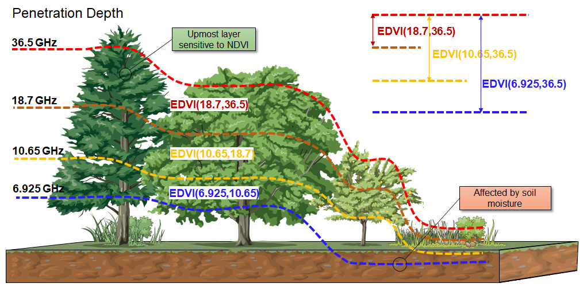
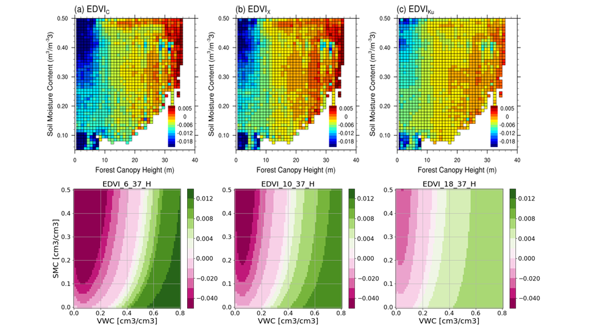

All-weather Microwave Land Surface Emissivity (MLSE)

Passive microwave (PMW) remote sensing provides excellent capability of detecting the surface radiative properties through the atmosphere for being less affected by clouds and gases.
MLSE is a intrinsic surface radiative property, which significantly depends on the moisture stauts of the surface mixed medium consists of soil, vegetation, soil, and snow, thus has widely been applied in remorte sensing of Earth surface.
We developed a framework to retrieve the MLSE under both overcast and clear conditions using multisource satellite observations and reananlysis.
In the framework, brightness temperatures at the top of atmosphere (TOA) are obtained from spaceborne microwave radiometers (i.e., AMSR-E, SSM/I,FengYun/MWRI. etc.).
Cloud properties are collected from simultaneous VIS/Infra-red cloud properties products (e.g., Aqua/MODIS, HIMAWARI/AHI, FengYun/MERSI, etc.).
Atmospheric temperature and vapor profiles, land skin temperature are taken from reanalysis (e.g., ERA5, NCEP).
The contribution of atmosphere is caculated by Radiative Transfer Model and removed from the TOA brightness temperature.
The related MLSE dataset can be used to retrieve the soil moisture content (SMC), vegetation water content (VWC), the intensities of Evapotranspiration (ET) and volatile organic compounds (VOCs) emission of terrestrial ecosystem, and can also be used to indicate the forest fire likelihood.
It also provides background emission for the retrievals of atmospheric parameters (e.g., cloud water, precipitation, and precipitable water) over land.
Related Publications
Li, R., J. Hu, S. Wu, P. Zhang, H. Letu, ...& L. Sun.(2022). Spatiotemporal Variations of Microwave Land Surface Emissivity (MLSE) over China Derived from Four-Year Recalibrated Fengyun 3B MWRI Data. Advances in Atmospheric Sciences.39, 1536–1560
Hu, J., Y. Fu, P. Zhang, Q. Min, Z. Gao, S. Wu and R. Li.(2021). Satellite Retrieval of Microwave Land Surface Emissivity under Clear and Cloudy Skies in China Using Observations from AMSR-E and MODIS. Remote Sensing. 13(19).
Multichannel Emissivity Difference Vegetation Index (EDVI)

Microwave radiation above a canopy is mainly contributed by the integration of vegetation emission from the canopy profiles weighted by its transmissions and the attenuated radiation from underneath the ground (Mo et al., 1982). Emissivity observed at longer wavelengths with weaker attenuation generally represents an effectively thicker layer and is more easily affected by the ground signal than those observed at shorter and stronger attenuated wavelengths. Based on this, Min and Lin (2006) introduced the EDVI index based on the difference of the surface emissivity of microwaves of two wavelengths, representing the VWC and other vegetation characteristics of the vegetation canopy with a minimal influence of the soil emission.
EDVI is defined as: EDVI(A,B)= 2(MLSE_A - MLSE_B) / (MLSE_A + MLSE_B )
We found in a series of continantal studies that, EDVI_C (i.e., EDVI(C,Ka)) and EDVI_X (i.e., EDVI(X,Ka)) represent more VWCs related to deeper penetration depths than EDVI_Ku (i.e., EDVI(Ku,Ka)), and those two indices were significantly greater than EDVI_Ku. Such differences are more significant in growing seasons when the plants’ relative water content is the highest in the year.
Related Publications
J. Hu, R. Li, Y. Wang and Y. Fu.(2022). Responses of Multiple Channel Microwave Emissivity Difference Vegetation Index (EDVI) to Forest Vertical Structures and Soil in South Asia. Remote Sensing of Environment.(under review).
HU Jiheng, LI Rui, WANG Yu, et al.(2020). Analysis of the characteristics of satellite-derived multiple channel microwave Emissivity Difference Vegetation Index (EDVI) over different vegetation types[J].Journal of University of Science and Technology of China,2020,50(4):528-541.
Radiative Transfer Model (RTM) and Forward Emission Simulations

Forward simulations of surface microwave radiometry for multiple channels over bare soil and vegetated surface provide direct understandings of the physical basis of the EDVI behaviors as responses to SMC and vegetation water content.
For this reason, we developed a forward surface emission model basesd on a 1st-order two-stream (2S) solution of the radiative transfer (RT) equation and surface parameterization modules to simulate the apperent emssivity for soil-vegetation-air three-layer surface. The 2S RT solution is orginally proposed serving as as part of the “Microwave Emission Model of Layered Snowpacks” (MEMLS)(Wiesmann and Mätzler, 1999). Compared to the well-known Tau-Omge solution(Mo et al., 1982), the 2S RT solution considers the volumetric scattering inside the vegetation layer and multiple reflections on the layer interfaces (Li et al., 2020b; Schwank et al., 2018).
In our model, the downwelling radiative from the sky is omited and the above vegetation is taken as single homogeneous soft-layer, which means the interface reflectivity at the canopy top is zero. The soil is taken as a semi-infinite homogeneous layer with a rough surface. The soil dielectric constant is calculated as a function of soil texture, surface skin temperature, and soil moisture constant following a dielectric mixing model (Dobson et al., 1985). The surface reflectivity is calculated following Fresnel equations as functions of incident angle and soil dielectric constants. Surface roughness, as parameterized by the standard deviation of surface height, modifies the surface reflectivity with roughness parameter Hr and the polarization mixing factor Q following Weng (2017). For vegetation layer, leaves are modeled as homogeneous slabs having a uniform dielectric constant (Ulaby and El-rayes, 1987) and thickness, with which the reflectivity, transmissivity, and absorptivity for the leaf are calculated as in Ulaby et al. (1981). The canopy absorption and scattering coefficients are calculated by multiplying the leaf optical parameters, leaf orientation and density distributions. The above soil and vegetation paramters as well as interface reflectivities are than input to the 2S RT model to simulate the surface emission.
(Study is ongoing, more progresses are expected.)